H
H1:
Northern Road, Slough, Berkshire
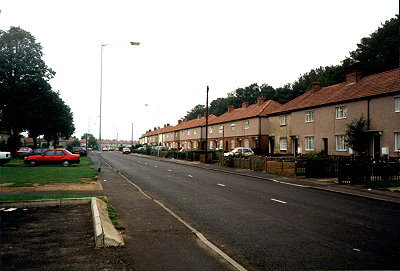
THE SECRET SERVICE: To
Catch a Spy (Ken
Turner:
Autumn 1968)
Father Unwin, in Gabriel, follows the Jaguar carrying Sir Humphrey and
Grey as it heads for Kew gardens.
H2:
Wexham Park Hospital, Stoke Green, Slough, Berkshire

STRANGE REPORT: Report
4407 - HEART:
'No choice for the donor' (Robert Asher: 1968)
Strange arrives in his Taxi with Evelyn to pick up Ham.
STRANGE REPORT: Report
4821 - X RAY: 'Who weeps for the
doctor' (Charles Crichton: 1968)
Ham and Evelyn attend a party at Porter's Green Hospital. The following
day Strange (Anthony Quayle) and Ham (Kas
Garas) arrive at the hospital
in Strange's black cab. Ham leaves the hospital and bumps into a man at
the entrance - recognising him as the radiologist Caine (Ewan
Hooper),
he gives chase. Later, looking for Nurse Peggy Gale, Ham races into the
hospital grounds on his bike. Chased by Pegg (Trisha Mortimer),
Miss
Collingford (Ann Firbank) runs to the roof of the
hospital and
threatens to kill herself. Strange arrives at the hospital with the
police and races to the roof as Peggy tries to talk Miss Collingford
down. Ham gets to the roof just in time and pulls Peggy and Miss
Collingford down. Both women are taken away by Franklin (Nicholas
Selby). Strange and Ham watch from the roof as the police
cars pull out
of the car park.
THE SECRET SERVICE: School
for Spies (Ken
Turner:
Autumn 1968)
A fake priest ends up in hospital.
UFO: The Long Sleep
(Jeremy
Summers:
August 1970)
Straker goes to visit Catherine in hospital.
Film:
DOCTOR IN CLOVER
(1966)
H3:
Windsor, Berkshire
THE PERSUADERS!:
Someone Waiting (Peter
Medak:
1971)
Danny, Brett and Dwyer drive past the Mitre pub (Oxford Road
/
Vansittart Road) towing the ‘Sinclair Special’ as they return
from the
motor racing circuit. Danny, Brett and Dwyer turn a corner (into
Vansittart Road from Albert Street, driving past the Bexley Arms pub)
towing the ‘Sinclair Special’ as they return from the motor racing
circuit. They are followed by Carrie. Later Brett (Roger
Moore) is
tipped off by Lyndon and drives his BS1 to an empty house, 20 Park Way
(Fountain Gardens, Osborne Road, Windsor, demolished),
to investigate
who was employing him. He gets out of the car and walks up to the house
and enters.
(Jaz Wiseman July 2006/Sietse Postma Aprl 2022)
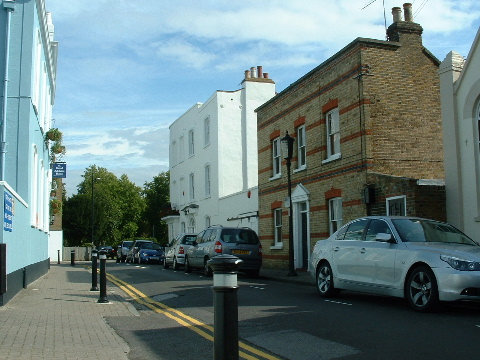
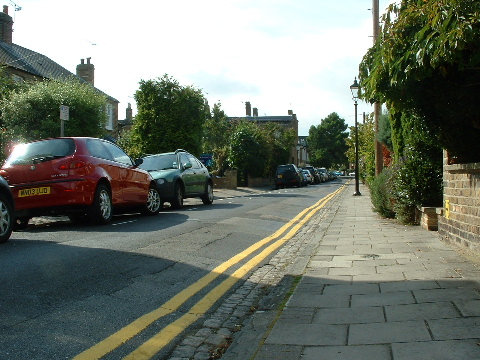
THE NEW AVENGERS: Target
(Ray Austin:
July 1976)
After overhearing Draker’s plan, Dick Palmer (Robert Tayman)
staggers
towards a nearby telephone box (Adelaide Square) to
warn Steed about
the attempt on George Myers life. Draker (Keith Baron)
and Klokoe (Deep
Roy) are there to watch him draw his final breath before
driving away.
(Identified by Al Smudge Samujh, October 2007)
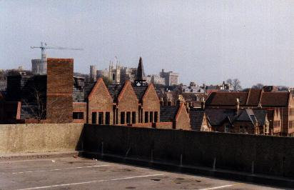
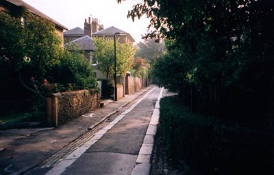
THE NEW AVENGERS: Trap
(Ray Austin:
Spring 1977)
During a drugs investigation, Purdey (Joanna Lumley)
drives Marty Brine
(Stuart Damon) in her yellow Triumph (down
Castle Hill, along the High
Street and along Frances Road) to a rendezvous with Steed. At
the
rendezvous (Edinburgh Gardens), Purdey and Marty
Brine are met by Steed
(Patrick Macnee) and Gambit (Gareth Hunt).
Purdey, Marty Brine, Steed
and Gambit watch one of Soo Choy's men posing as a street cleaner (in
Gloucester Place). When a car drives past and drops off a
consignment
of drugs they give chase. Marty is shot by Soo Choy's man. Steed and
Gambit chase the man into a multi-story car park (Victoria
Street)
where he falls to his death after Steed prevents him from shooting
Gambit.
RETURN OF THE SAINT: The
Armageddon Alternative
(Leslie Norman: 1978)
Fred (George Cole) leaves the M4 motorway at
junction 6 on his way
home. A few hours later Simon's Jaguar XJS leaves the motorway at the
same junction and parks by the roundabout whilst Simon (Ian
Ogilvy) and
Lynne Jackson (Anouska Hemple) attempt to work out
where the bomber
took
Simon the previous night. They are seen by Fred who quickly drives away.
RETURN OF THE SAINT: The
Arrangement (Peter
Medek:
???)
Sir Trevor Stevens is persuaded by his wife to visit his riverside
boathouse late at night (by Windsor Town Bridge).
Films:
CARRY ON CABBY (1963)
H4: Eton, Berkshire

THE NEW AVENGERS: The
Midas Touch
(Robert Fuest: Spring 1976)
Freddy (John Carson) sees an old colleague, Steed (Patrick
Macnee),
getting into a taxi outside The Cock Pit on Windsor Road.
THE NEW AVENGERS: The
Lion and The Unicorn (Ray
Austin: 1977)
Steed (Patrick Macnee) foils the Unicorn's
attempted assassination of a
Minister (Gerald Sim) outside the conference hall (Eton
College School
Hall & School Library).
(Identified by Gareth Hughes June 2001)
INSPECTOR MORSE: Absolute
Conviction (Antonia
Bird: 1991)
Hillary Stevens (Diana Quick) goes to see Morse (John
Thaw) during
choir practice to talk to him about a series of thefts at the prison.
H5:
225 Bath Road,
Slough, Berkshire (demolished)
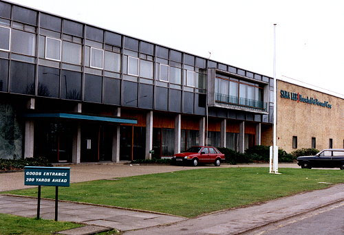
UFO: E.S.P. (Ken
Turner:
November
1969)
Croxley (John Stratton) leaves work by the
factory's side gate and is
met by his wife, Stella (Deborah Stanford). They
arrive at the main
entrance and Croxley leaves his wife to see Dr. Ward. Straker and
Freeman arrive at the main entrance later to see Dr. Ward.
H6: Billet Lane and
Hollybush Lane, Iver Heath, Buckinghamshire
UFO: The
Long
Sleep (Jeremy Summers: August 1970)
After escaping from the farm Catherine (Tessa Wyatt)
manages to get a
lift from a passing van driver (John Garrie). His
van pulls off the
road into a car park (Langley Park car park) and
Catherine is attacked
by the van driver and runs in front of Commander Straker's (Ed
Bishop)
car.
THE NEW AVENGERS: Tale
of the Big Why (Robert
Feust: August 1976)
Gambit (Gareth Hunt) drives Purdey (Joanna
Lumley) in his white Range
Rover to some cherry orchards. Poole (Rowland Davis)
and Roach (Gary
Waldhorn) are waiting for them in their car and they follow.
Film:
HELL DRIVERS (1957)
H7: Black Park Lake,
Black Park, Iver Heath, Buckinghamshire
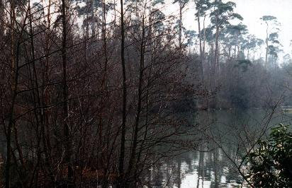
THE
SAINT: The Sporting
Chance (Jeremy Summers: 1963)
While attempting to fish on Lake Manitou, Canada, Professor
Otto Mueller (Gerald Heinz) meets Simon Templer (Roger
Moore)
and Beaver Johnson (Harry Webster), the
meeting is observed by
Cleaver (Brandon Brady). After a change in
plan, Mueller
and Marion Kent (Carol Cleveland) are
taken to 'Lake C' from
Toronoto. Simon is hot on their trail and rents a cannoe to find a
cabin belonging to Julius Pavan (Godfrey Quigley)
where he has
to defeat the Russian inteligence officer Netchideff (Deren
Nesbitt).
DANGER MAN: The Man
With The Foot (Jeremy
Summers: January 1966)
John Drake (Patrick McGoohan) goes alone into the
woods to recover the
wolf cubs from the wolves’ layer. Later John Drake is ice fishing
watched by Derringham (Bernard Lee). Derringham is
in turn being
watched by Soleby (Hugh McDermott) and Monkton (Robert
Urquhart).
Mockton holds Derringham at gun point while Soleby goes after Drake.
Drake manages to disarm Soleby who escapes in his car, Drakes chases
after him in his Mini.
THE SAINT: The Paper
Chase (Leslie
Norman:
August 1966)
After stealing a military car, Simon Templar, Eric Redman and Hanya
arrive at the East German checkpoint. They drive off the road and Simon
tells the others to wait in the woods while he prepares for a border
crossing.
THE SAINT: The Death
Game (Leslie
Norman:
November 1966)
Gretl boards a motorboat moored by the lake and is ferried across to
the other side to report to Vogler. Later Jenny (Angela
Douglas) also
takes a boat across the lake to warn Simon that he has been unmasked.
MAN IN A SUITCASE: Somebody
Loses...Somebody Wins
(John Glen: April 1967)
McGill (Richard Bradford) makes a daring escape as
he crashes through
an East German border post. He is helped across the border by West
German guards where he is met by Fedora (Peter Hager).
MAN IN A SUITCASE: Essay
In Evil (Freddie
Francis:
June 1967)
Felix De Burg (Peter Vaughn), Harris (Maurice
Good) and Peters (John
Cairney) kidnap McGill (Richard Bradford)
and take him to Masters' boat
house where they are planning to plant a mine in the path of his boat.
George Masters (Donald Houston) arrives and his
butler, Crick (Peter
Brace), is shot by De Burg. Masters' wife, Lucinda (Wendy
Hall),
arrives and De Burg is shot. Harris shoots Peters in a struggle and
Masters' is blown up a he attempts to escape in his boat.
MAN IN A SUITCASE: The
Man Who Stood Still (Peter
Duffel: Summer 1967)
A Spanish taxi driver (Richard Montez) takes (Rupert
Davies) and his
daughter (Jeanna L'Esty) to look at a lake-side
house which was raised
to the ground during the Civil War. Later McGill the same driver takes
McGill past the lake.
THE SAINT: The
People Importers (Ray
Austin: 1968)
The illegal immigrants are being driven from the Sussex coast to London
in a van. The van swerves to avoid another vehicle and bursts a tyre
leaving the immigrants stranded.
UFO: Identified
(Gerry
Anderson:
April/May 1969)
Peter Calin (Peter Gordeno), Leila (Edwina
Carroll) and Jean
investigate something mysterious in the woods. They discover a UFO
but are suddenly attacked by an alien.
UFO: Computer Affair
(David
Lane:
May 1969)
A team SHADO operatives led by Mark Bradlley (Harry Baird)
investigate
a crashed UFO in Canada. After a fire fight they manage to capture
an alien (Gito Santana) alive.
UFO: The Square
Triangle (David
Lane: September 1969)
Liz Newton (Adrenne Corri) and Cass Fowler (Patrick
Mower)
arrive at the
Newton's country home (Black Park Lodge). Later
that night an
unexpected
visitor pays a call. A SHADO operative later escorts Liz to a nearby
SHADO Jeep where Cass is already waiting.
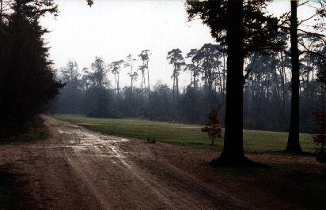
UFO: The Sound of
Silence (David
Lane: May 1970)
Russ (Michael Jayston) and Anne (Susan
Jameson) exercise their horses
in the wood and find a tramp, Cully (Nigel Gregory),
camped by the
lake. Paul Foster (Michael Billington) suspects
that a UFO is hiding
in the lake whilst searching for Russ.
THE PERSUADERS!: Five
Miles To Midnight (Val
Guest: 1970)
Brett (Roger Moore), Danny (Tony Curtis)
and Sidney (Joan Collins) wish
farewell to Judge Fulton (Laurence Naismith) and
Frank Rocco (Robert
Hutton) as they depart by helicopter. After finding out that
man who
has left was not the real Rocco but an American agent, Sidney drives
off in the Land Rover leaving Danny and Brett to walk back.
THE PERSUADERS!: Chain
Of Events (Peter
Hunt:
Peter Hunt 1970)
After a night sleeping rough Danny (Tony Curtis)
leaves Brett (Roger
Moore) sleeping in luxury tent to go fishing in the lake. On
the way he
meets a man in the woods (Peter Vaughan) and sees a
girl (Suzanna
Leigh) looking for someone. Whilst fishing Danny finds a
fatally
injured parachutist who fastens a briefcase to has arm before he dies.
Later Danny is confronted by Britten (George Baker)
and Brett is asked
to leave the land by a policeman (Neil Wilson).
THE PERSUADERS!: Greensleeves
(David
Greene:
1970)
Brett (Roger Moore), posing as an actor, goes
riding with Melanie
(Rosemary Nichols) by the lake.
THE PERSUADERS!: Read
and Destroy (Val
Guest:
1971)
Brett Sinclair (Roger Moore) searches for Felix
Meadows (Joss Ackland)
whilst they are out shooting.
THE PERSUADERS!: A
Home of One's Own (James
Hill: 1971)
Danny (Tony Curtis) takes Brett (Roger
Moore) in his Land Rover to see
his new house in the country.
THE ADVENTURER: Counterstrike
(Director
Paul
Dickson: 1972).
Gene Bradley's (Gene Barry) glider crash-lands in
an East German
forest. Bradley leaves the glider and walks through the forest where is
shot at by an unseen marksman.
SPACE:1999: The Rules
of
Luton (Val Guest: April 1976)
Commander Koenig (Martin Landau) and Maya (Catherine
Schell) swim
across a river to avoid the three aliens that they are being forced to
fight. Alien transporter (Godfrey James) drowns in
the lake when he
flees from the lion into which Maya has transformed. Alien Strong
(David Jackson) and Alien Invisible (Roy
Marsden) eventually cross the
river on a floating log.
THE NEW AVENGERS: To
Catch a Rat (James
Hill:
Summer 1976)
The White Rat passes through a checkpoint in Eastern Europe.
THE NEW AVENGERS: Dead
Men Are Dangerous (Sidney
Hayers: Spring 1977)
Steed (Patrick Macnee) drops Mark Crayford (Clive
Revill) at an iron
curtain border.
THE NEW AVENGERS: Angels
of Death (Ernest
Day:
Summer 1977)
Steed (Patrick Macnee) and Purdey (Joanna
Lumley) wait for agent Martin
at the East German border. He smashes through the border gates in his
lorry only to be shot by Coldstream (Dinsdale Landen).
THE PROFESSIONALS: Runner
(Martin
Campbell: 1979)
Glover (James Cosmo) dumps the stolen weapons in
the lake. Later Bodie
(Lewis Collins) and Doyle (Martin Shaw)
meet Cowley (Gordon Jackson) at
the lake.
THE PROFESSIONALS: Dead
Reckoning (Denis
Lewiston:
1979)
Batak (Derek Godfrey) is exchanged for Vashunin (Gabor
Vernon) at the
Bulgarian Border.
Films:
CARVE HER NAME WITH PRIDE
(1958)
DEVILS OF DARKNESS
(1964)
FAHRENHEIT 451 (1966)
ISLAND OF TERROR
(1967)
THE SPY WITH A COLD NOSE
(1966)
GO FOR A TAKE (1972)
I DON’T WANT TO BE BORN
(1975)
SUPERMAN 2 (1981)
Television:
CARRY ON LAUGHING: The
Nine Old Cobblers (1975)
BLAKE'S 7: The Web
(1978)
DOCTOR WHO: Full
Circle (1980)
DOCTOR WHO: The
Visitation (1982)
DOCTOR WHO: Castrovalva
(1982)
DOCTOR WHO: Battlefield
(1989)
HART TO HART: Harts
and
Hounds (1983)
JEEVES AND WOOSTER (1993)
DIANA - HER TRUE STORY
(1993)
PAUL MERTON THE SERIES
(1993)
THE ALL NEW ALEXEI SAYLE SHOW
(1993)
H8: Pinewood Studios,
Pinewood Road, Iver Heath, Buckinghamshire
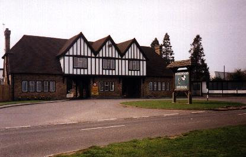
="">
THE AVENGERS: The
Fear Merchants
(Gordon Flemyng: September 1966)
Steed's Bentley pulls up at a road junction (Pinewood Road
and
Alderbourne Lane), having lost sight of Crawley's Rolls.
STRANGE REPORT: Report
8319 - GRENADE:
'What Price Change?' (Charles Crichton: Early
1968)
As the double-decker bus drives along the country road (Pinewood
Road),
Gynt (Kaz Garas) gives the conductor (John
Hamilton) an urgent message
before continuing jumping out to follow Walker (Anthony
Corlan).
STRANGE REPORT: Report
8944-HAND:
'A matter of witchcraft' (Peter Duffell: 1968)
The Adam Strange (Anthony Quayle) visits Blakesley
Police Station (Gate
House) and talks to a police sergeant (Peter Welch)
about the killings
twenty years ago.
THE SECRET SERVICE: A
Case for the Bishop (Ken
Turner: Autumn 1968)
Gabriel, with Father Unwin aboard, is pursued along a country road
(Pinewood Road) by a police car. Father Unwin stops
and attempts to
explain the importance of his mission to a police officer.
UFO: Timelash
(Cyril
Frankel: August
1970)
After a night-time UFO attack Commander Straker (Ed Bishop)
and
Colonel Virginia Lake (Wanda Ventham) arrive at
Harlington Straker
Studio
gates in Straker's car and find themselves in daylight.
THE ADVENTURER: To
The Lowest Bidder (Val
Guest, 1972)
Gene Bradley (Gene Barry) parks his car at the
Parkington School for
Girls (Hetherden Hall) and goes into the gardens
looking for Sarah
Cookson (Jane Asher) where is spotted by schoolgirl
Lizzy (Gillain
Bailey) who offers to take him to see Sarah. They walk
through the old
stable block building.
Spotted by Jaz Wiseman, March 2006
Films:
HAWKS (1988)
H9: Fulmer Hall, Fulmer,
nr. Gerrards Cross, Buckinghamshire 
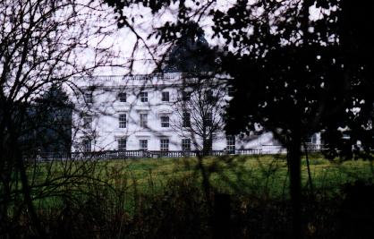
Fulmer Hall
THE NEW AVENGERS: Hostage
(Sidney
Hayers: Spring
1977)
Walters (Michael Culver) parks his car on the road
outside Steed's
estate to watch the house and follows as Steed leaves in a Rover 3500,
intercepting Steed's post on the way.
THE NEW AVENGERS: Dead
Men Are Dangerous (Sidney
Hayers: Spring 1977)
Hara (Terry Taplin) arrives at Steed's house to
plant a bomb and
departs. There is an explosion and Steed (Patrick Macnee)
dashes
outside to find his Bentley blown to pieces. The same day Purdey
(Joanna Lumley) answers the doorbell and finds a
coffin with John
Steed's name on it. She calls Steed out of the house to investigate.
After returning from hospital Steed is lured out of his house by a
loudspeaker set up in the woods nearby..
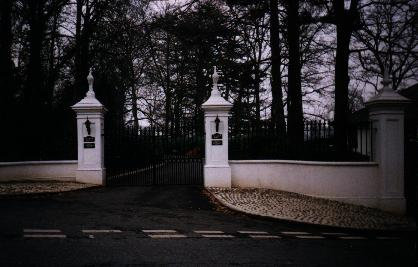
Fulmer Hall gates
THE NEW AVENGERS: Medium
Rare (Ray
Austin: Spring
1977)
Purdey (Joanna Lumley) and Steed (Patrick
Macnee) escort Victoria
Stanton (Sue Holderness) out of Steed's house to
her car as Gambit
(Gareth Hunt) arrives. They discover that the tyres
on Steed's yellow
Rover have been let down. Steed persuades Gambit to drive him to his
headquarters in his Jaguar and Purdey is left to investigate. She
narrowly misses being attacked by Richards (Jeremy Wilkin).
THE NEW AVENGERS: Obsession
(Ernest
Day: Spring
1977)
General Canvey (Mark Kingston) leaves Steeds party.
H10: Denham,
Buckinghamshire
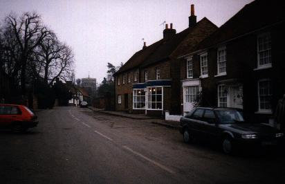
SABER OF LONDON: The
Killer and The Kid (1957/59)
William Masters (Harry Fowler) is tracked down by
the police to Mrs.
Barlow's rooming house. He escapes after killing a policeman.
MAN IN A SUITCASE: All
That Glitters (Herbert
Wise: August/September 1966)
A street in the village of Norton.
THE AVENGERS: Return
of the Cybernauts
(Robert Day: 22nd May 1967)
The scientist's house (Denham Place) seen from the
Cybernaut's point of
view as it arrives to kidnap its first victim.
THE CHAMPIONS: Project
Zero (Don
Sharp: Autumn
1967)
Dr. Travis (John Moore) and Sharron (Alexandra
Bastedo) both run for
help to a village post office.
RANDALL AND HOPKIRK [DECEASED]:
For The Girl Who Has Everything
(Cyril Frankel: Summer 1968)
Scenes for the village near Crake Castle with the Buttery Cafe,
including Marty trying to get help for Jeff from a police sergeant
(George Lee) and a girl (Carol Dilworth)
with a dog.
DEPARTMENT S: The
Man From 'X' (Gil
Taylor:
Early 1969)
Jason falls amongst thieves when, posing as Max Rinston. He is taken to
hold up at the gang's headquarters in the country (The White
House,
Village Road).
(Identified by Geoff Dodd, June 2007)
THE PERSUADERS!: Greensleeves
(David
Greene:
1970)
Danny (Tony Curtis) drives his Ferrari into a lane (behind
the church
off Old Mill Road) to meet Brett (Roger Moore).
After a short
discussion, they jump over the wall to gain access to the grounds of
the Greensleeves mansion.
THE PERSUADERS!: Take
Seven (Sidney
Hayers:
October 1970)
Danny and Brett are chasing the assassin, The Major (Colin
Vancao) (in
the grounds of Pinewood Studios). When the Major uses his
ladder to
climb the wall to get to his car, which it is parked in the a country
lane (behind the church off Old Mill Road). Later,
Brett drives past
the church yard on his way to stop Jenny Lindley meeting her brother
alone.
(Jaz Wiseman, September 2011)
THE PERSUADERS!: The
Time and the Place (Roger
Moore: March 1971)
The game keeper, Thompson (David Lodge), takes
Brett (Roger Moore) and
Danny (Tony Curtis) to see Lord Croxton (Ian
Hendry) who is shooting
clay pigeons outside his house (Denham Place). The
butler arrives to
inform the party that Richard team is about to leave. Later Lord
Sinclair follows Danny's kidnappers down Cheapside Lane and arrives at
a village in his Aston Martin DBS after Danny. He is about to give up
the chase when Danny's Ferrari drives past and he follows it.
HAMMERHOUSE OF MYSTERY AND SUSPENSE:
The Sweet Scent of Death
(Peter Sasdy: December 1983)
Greg Denver (Dean Stockwell) and his wife Ann (Shirley
Knight) visit
the village to pick up the key for their new home from the estate
agency.
INSPECTOR MORSE: Twilight
of the Gods (Herbert
Wise: 1993)
Morse (John Thaw) drives Lewis (Kevin
Whately) to Charlton Woodvill in
his Jaguar. On the way Lewis suggests they stop for a drink a village
but Morse declines.
Film:
THE SQUARE PEG (1958)
CAPTAIN CLEGG (1962)
MURDER AT THE GALLOP
(1963)
MURDER A'HOY (1964)
DROP DEAD DARLING
(1966)
KADOYNG (1972)
BARRY MCKENZIE HOLDS HIS OWN
(1974)
Television:
LUCY IN LONDON (1966)
HART TO HART: Harts
and Hounds (1983)
H11: Heatherden Hall
Gates, Pinewood Road, Iver Heath, Buckinghamshire
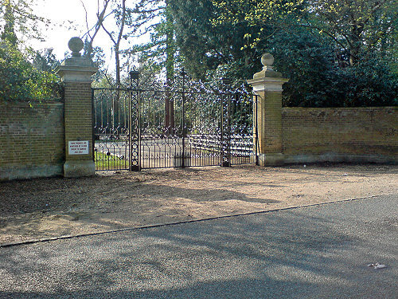
photo: Geoff Dodd
COURT MARTIAL: The
House Where He Lived
(Peter Maxwell: 1964)
Major Frank Whittaker (Peter Graves) arrives in his
Jeep.
MAN IN A SUITCASE: The
Sitting Pigeon (Gerry
O'Hara: March 1967)
Rufus and McGill are seen leaving the Botanical Gardens by a hot dog
vendor. That night Geordie (Shaun Lynch) climbs
over the wall on his
way to deal with Rufus.
MAN IN A SUITCASE: Property
of A Gentleman (Peter
Duffell: Summer 1967)
Doctor Vance arrives in his car at the gates of Chester Farson's house
and is let in by Logan (Victor Brooks). Sometime
later McGill (Richard
Bradford) pretends that his Hillman has suffered a flat tyre
outside
the gates and he watches Jane Farson (Justine Lord)
arrive in her Rolls
Royce and is refused entrance by Logan and her brother, Gerald (Terence
Alexander).
STRANGE REPORT: Report
No.2475 - REVENGE:
'When a man hates' (Charles Crichton: November
1968)
Strange and Inspector Jenner arrive in a police car at the gates of The
Sandrom Academy to question Bill about Michael's father, Hanson.
STRANGE REPORT: Report
4407 - HEART:
'No
choice for the donor' (Robert Asher: July/August
1968)
Ham is kidnapped by Segarus (Kenneth Griffith) in a
white Jaguar and
taken through the gates of the house, stopping to give instructions to
the guards on the way. The police arrive and arrest the guards while
Strange (Anthony Quayle) goes to look for his
friend.
THE PERSUADERS!: Greensleeves
(David
Greene:
1970)
Danny Wilde (Tony Curtis) arrives in his Ferrari at
Greensleeves' gates
posing as a tourist and is refused admission by a gamekeeper.
THE PERSUADERS!: Take
Seven (Sidney
Hayers:
October 1970)
Danny racing to save Jenny, in his red Ferrari, arrives at the gates of
the Lindley country seat.
THE PERSUADERS!: Read
and Destroy (Roy
Ward
Baker: 1971)
Ivan Ivanov (Harvey Hall) is stopped by Heidi (Kate
O'Mara) and Ingrid
(Magda Konoppka) as they arrive at Brett's cousins'
house looking for
their husband, Felix. Later Benson (Brian Hayes)
arrives on his
motorbike.
THE NEW AVENGERS: To
Catch A Rat (James
Hill:
Summer 1976)
Gunner (Ian Hendry) watches as a police car arrives
at Quaintance's
house.
THE NEW AVENGERS: Hostage
(Sidney
Hayers: Spring
1977)
Walters in a BMW attempts to follow Steed as he leaves for a meeting in
a Rover 3500, but Steed loses him by doubling back in the gateway.
THE NEW AVENGERS: Medium
Rare (Ray
Austin: Spring
1977)
In an attempt to frame John Steed, Richards (Jeremy Wilkin)
parks his
car inside the Bulgarian Embassy.
Film:
CARRY ON SCREAMING (1966)
H12: Canal Bridge 189,
Benbow Waye, Cowley, Greater London
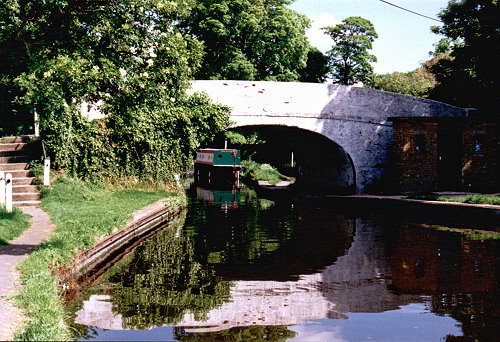
UFO: The Long Sleep
(Jeremy
Summers:
August 1970)
Catherine (Tessa Wyatt) recalls how she threw an
alien mechanism into a
house boat on the canal. Paul Foster (Michael Billington)
arrives in
his car at the bridge to search for the device but finds the body of
the house boat's owner instead.
H13: Five Points/Crooked
Billet Roundabout, A412, A4007 and Pinewood Road, Iver Heath,
Buckinghamshire
MAN IN A SUITCASE: Property
of a Gentleman (Peter
Duffell: Summer 1967)
McGill persuades Doctor Vance to drive him and Jane to Chester Farson's
house (along the A412).
STRANGE REPORT: Report
4407 - HEART:
'No
choice for the donor' (Robert Asher: 1968)
Wilson in car A16, positioned at Duke Roundabout is put on alert for
the white Jaguar carrying Ham.
H14: Alderbourne Arches,
Hawkswood Lane, Fulmer, Buckinghamshire
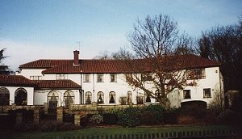
THE BARON: Night of
the Hunter (Roy
Baker:
July 1966)
Daniella helps Madame Nicharos escape from the villa where she is being
held and is taken to a car waiting by the ford.
MAN IN A SUITCASE: Sweet
Sue (Robert
Tronson:
September 1966)
McGill (Richard Bradford) tries to get to know Sue
Mandell (Judy
Geeson) by the pool at an luxury hotel, but her two
boyfriends, Charles
(David Cole) and Colin (Peter Blyth)
arrive on the scene.
THE CHAMPIONS: The
Iron Man (John
Moxey: June
1967)
A small group of assassins break into El Caudillo's villa on an
exercise. Richard, Craig and Sharon are sent to the villa as undercover
bodyguards. Craig (Stuart Damon) patrols the
grounds. That night three
assassins attempt to break into the house but Craig manages to deal
with two of them on his own.
DEPARTMENT S: The
Double Death of Charlie Crippen
(John Gilling: Autumn 1968)
Jason manages to talk his way into the Villa Fantelle but after the
rest of the Department S team arrive the house is attacked by rebels.
THE NEW AVENGERS: Eagles
Nest (Desmond
Davis:
April 1976)
In the van, carrying the kidnapped Von Claus, Ralph (Jerold
Wells)
spots Gambit following and prepares to jump out of the van (passing
the
gates of Alderbourne Arches, Hawkswood Lane) .
Film:
HELL DRIVERS (1957)
H15: Fulmer,
Buckinghamshire
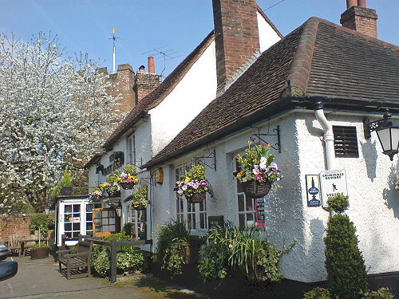
photo: Geoff Dodd
THE SAINT: The Death
Penalty (Jeremy
Summers: April 1964)
Marseilles, Simon drives Laura Stride to her family home in his
Volvo
(Fugelmere Grange, Fulmer Road).
(Spotted by Geoff Dodd, March 2021)
MAN IN A SUITCASE: Dead
Man's Shoes (Peter
Duffell: May 1967)
McGill (Richard Bradford) asks the villagers for
directions to the home
of John Gilson but they refuse to speak to him. Soon after this a
policeman (?) prevents McGill from being beaten up
by a gang of locals.
McGill retires to the Black Horse for a drink. Later McGill discusses
John Gilson with the Vicar (Noel Howlett) in the
churchyard and they
stop to admire the dovecote.
THE SECRET SERVICE: A
Case for the Bishop (Ken
Turner: Autumn 1968)
The Father Unwin and Matthew aboard Gabriel, are chased through the
village by the Dreisenberg Ambassador and his aide in a stolen police
car.
STRANGE REPORT: Report
2493 - Kidnap "Whose pretty girl are
you?" (Peter Duffell: 1969)
Strange (Anthony Quayle) arrives with Inspector
Hughes () in a police
car to ask about the photo they have of the kidnapper. They are
directed to Alison Manor.
THE PERSUADERS!: Greensleeves
(David
Greene:
1970)
Danny drives Brett to the Lord's local pub in his red Ferrari so that
he can use the secret passage there to get into his ancestral home
unnoticed.
THE NEW AVENGERS: Target
(Ray Austin:
July 1976)
Purdey (Joanna Lumley) drives George Myers (Malcolm
Stoddard) to the
shooting range.
H16: Leys Farm, Thompkins
Lane, East Burnham, Buckinghamshire
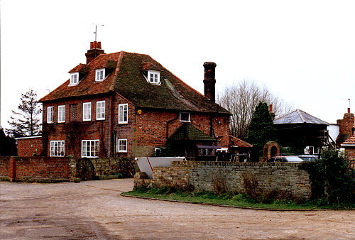
MAN IN A SUITCASE: Which
Way Did He Go McGill?
(Freddie Francis: Late 1967)
McGill (Richard Bradford) visits the farm to talk
to Joy Hallows
(Jennifer Jayne) about the people with her in a
photograph he has been
given. Later McGill visits the her stables again to search for clues
and he finds the body of George, but Joy finds McGill and knocks him
out. Earle (Donald Sutherland) arrives at the house
looking for his
share of the loot and McGill has to dodge a hail of bullets as he
attempts to save Joy.
H17: Stoke Park House,
Stoke Poges Golf Course, Stoke Poges, Buckinghamshire
THE SAINT: The Man
Who Liked Lions (Jeremy
Summers: July 1966)
Simon gate crashes Tiberio's party with Claudia.
THE NEW AVENGERS: Eagle's
Nest (Desmond
Davis:
April 1976)
Gambit (Gareth Hunt) arrives at the lecture given
by Von Claus (Peter
Cushing). As Gambit talks to Brown-Fitch (Trevor
Baxter), Ralph (Jerold
Wells) jumps out of the window into a waiting van with Von
Claus.
Gambit races out of the building and borrows a car to chase after the
kidnappers. The van is checked through the gates (East Drive
gates) by
a security man who is almost knocked over as Gambit races after it.
Film:
DEAD OF NIGHT (1945)
GOLDFINGER (1964)
H18: Foxlea Manor, Dorney
Wood Road, Burnham, Buckinghamshire
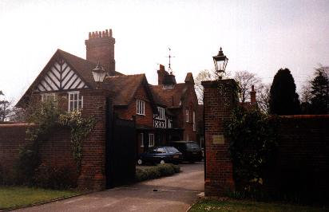
THE SECRET SERVICE (Ken
Turner: Autumn 1968)
Foxlea Manor is Father Unwin's vicarage in the title sequence and is
seen in most episodes.
H19: Albion, Common Road,
Slough, Berkshire (demolished)
STRANGE REPORT: Report
1553: Racist: 'A most dangerous
proposal' (Peter Duffell: August 1968)
Adam Strange watches from the taxi as Hamlyn Gynt (Kaz Garas)
delivers
his own version of the Paris edition of the Herald Tribune to Albert
Drake’s flat. and Gynt watch from the taxi as Drake (Karl
Held) can appears with the paper and drives off, Strange and
Gynt
follow in the taxi.
UFO: The Psychobombs
(Jeremy
Summers: July 1970)
Paul Foster (Michael Billington) is sent to
question Linda Simmons
(Deborah Grant) and he is waiting outside her
apartment block when she
arrives.
H20: The Coachouse,
Sevenhills Road, Iver Heath, Buckinghamshire
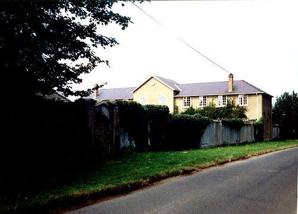
DEPARTMENT S: The
Man In The Elegant Room
(Cyril Frankel: Spring 1968)
Annabelle Hurst follows Selina Trenton's Lotus Elan and arrives at a
farmhouse near St. Albans where she is captured by Selina. That night
two million pounds worth of drugs are delivered by a helicopter which
is met by Burton (Michael Robbins).
UFO: The Long Sleep
(Jeremy
Summers:
August 1970)
Catherine Frazer (Tessa Wyatt) is taken to a farm
by Tim (Christian
Roberts) where they experiment with mind altering drugs. A
UFO
arrives and its two occupants plant a bomb in the cellar. Tim takes
part of the bomb and after a chase is killed when he falls from the
roof ten years later Straker (Ed Bishop) and Foster
(Michael
Billington) arrive at the farm but are too late to stop Tim
from
activating the bomb. A bomb disposal expert (Christopher
Robbie) is
sent for and his squad help load the bomb aboard a Space Dumper.
THE PERSUADERS!: Chain
Of
Events (Peter Hunt: Peter Hunt 1970)
Pursued through the woods, Danny (Tony Curtis)
takes refuge in a farm
building. Just as he gets inside Lance Schubert (Peter
Vaughan)
arrives. He is there to meet four men (James
Beckett, Rocky
Taylor, Peter Brace and Larry Taylor) who arrive in a
Landrover. Danny
watches as Schubert distributes police uniforms to the men so that they
can hunt down Danny unmolested.
(Spotted by Sam Denham, October 2010)
THE PERSUADERS!: That's
Me Over There (Leslie
Norman: 1971)
Danny Wilde (Tony Curtis) and Anne Summers (Susan
Farmer) are kidnapped
by Thaddeus Krane (Geoffrey Keen) and taken by
Rolls Royce to a nearby
farm where Krane's men, Lloyd (Derek Newark) and
Mather (Peter
Gilmore), threaten the girl in order to retrieve the
incriminating
evidence they have on Krane. Brett (Roger Moore)
arrives just in time
in a sports car driven by Prue and the two men manage to overcome the
villains in the fist fight that ensues.
Film:
THE HI-JACKERS (1963)
H21: Iver Grove, Wood
Lane, Shreding Green, Buckinghamshire
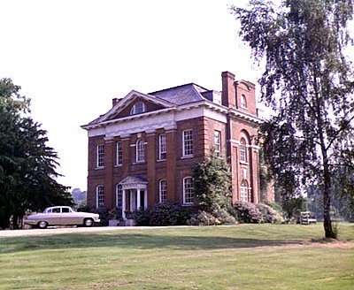
MAN IN A SUITCASE: Essay
in Evil (Freddie
Francis:
June 1967)
Lucinda Masters (Wendy Hall) is thrown out of the
house by Crick.
(Identified by Geoff Dodd, March 2016)
MAN IN A SUITCASE: Why
They Killed Nolan (Charles
Crichton: July 1967)
Nolan (Sam Kidd) sneaks through the undergrowth to
take a photograph of
Mrs Arnoldson (Ursula Howells) in her country
house. He is spotted by
the chauffeur who pursues his through the grounds with a gun. Nolan
manages to vault the wall and escape in his car. Later McGill (Richard
Bradford) follows Mr Arnoldson's car to the house in a taxi.
McGill
pays the driver to wait for him while he enters the grounds under the
cover of darkness, but Arnoldson and the chauffeur are waiting for him.
STRANGE REPORT: Report
8944-HAND:
'A matter of witchcraft' (Peter Duffell: 1968)
The Adam Strange drives his taxi into the grounds of The Spence private
school to ask dean Rollins about the mathematics teacher who left
suddenly twenty years ago.
THE NEW AVENGERS: Trap
(Ray Austin:
Spring 1977)
Soo Choy (Terry Wood) watches as his men leave the
house to search for
survivors of the plane crash. Later Steed (Patrick Macnee)
and Purdey
(Joanna Lumley) arrive at the house in a jeep
disguised as escort and
prisoner.
Film:
HELL DRIVERS (1957)
H22: Langley Park,
Uxbridge Road, Buckinghamshire
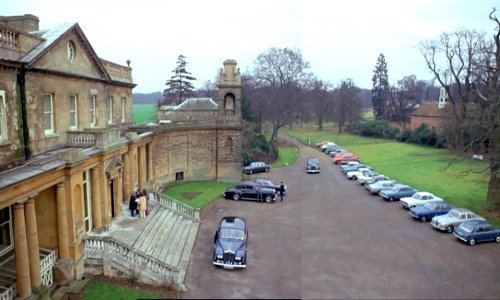
THE PERSUADERS!: That's
Me Over There (Leslie Norman: 1971)
Danny Wilde (Tony Curtis) arrives at the
Speakington Auction, in a
Rolls Royce, posing as Lord Sinclair. Later Danny is kidnapped by Krane
and Brett (Roger Moore) attempts to give chase in
his Aston Martin DBS
but he is held at gunpoint by Prentice (Neil Hallett)
who forces him
into his car. Prue (Juliet Harmer) leaves the
auction and follows in
her sports car.
Television:
THE GOODIES (1973)
H23: Slough Trading
Estate, Slough, Berkshire
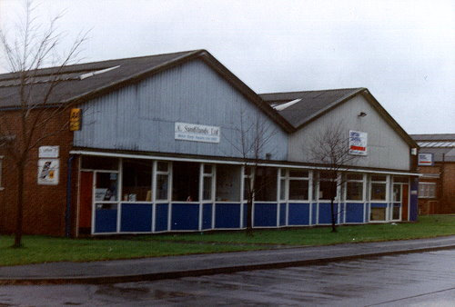
THE SECRET SERVICE: A
Case for the Bishop (Ken
Turner: Autumn 1968)
In a modern industrial estate (Oxford Avenue and Banbury
Avenue) the
offices of Healey Automation Computer Export Division (704
Stirling
Road) are broken into ant the top secret Healey XK20 mini
computer
stolen.
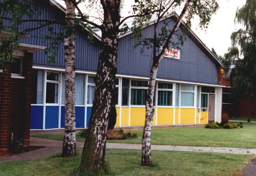
THE SECRET SERVICE: May
Day May Day! (Alan
Perry:
Autumn 1968)
Achmed and the King's brother arrive at Precision Instrument Makers
(Sovereign Plastics, Stirling Road) to collect a
timing mechanism from
Joe.
H24: Uxbridge Road,
Slough, Berkshire
THE SAINT: The World
Beater (Leslie
Norman: Summer 1968)
Simon Templar and Kay Collingwood set off on the first leg of the race
(nr junction of Diamond Road).
(Identified by Sam Denham, July 2003)
INSPECTOR MORSE: Absolute
Conviction (Antonia
Bird: 1991)
Morse (John Thaw), Lewis (Kevin Whately)
and D. S. Cheetham (Steven
Mackintosh) go to interview Brian Thornton (Richard
Wilson) in the
prison gardens (Slough Nurseries). Charlie Bennett (Jim
Broadbent) is
also working in the garden.
H25: Alderbourne
Arches/Ford, Hawkswood Lane, Fulmer
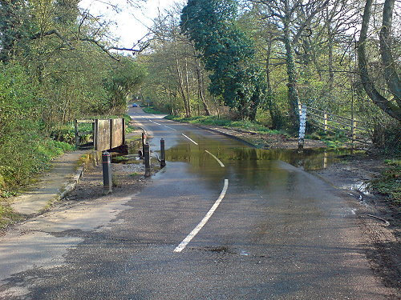
photo: Geoff Dodd
MAN IN A SUITCASE: Dead
Man's Shoes (Peter
Duffell: May 1967)
The Vicar is attacked by two motorcyclists at the ford and is killed.
THE CHAMPIONS: The
Iron Man (John
Moxey: June
1967)
Carlos (Stephen Berkoff) and Cabello (Norman
Florence) are dropped off
at a ford to watch El Caudillo's villa.
THE SECRET SERVICE: A
Case for the Bishop (Ken
Turner: Autumn 1968)
The Father Unwin, in Gabriel, is chased through the ford by the
Dreisenberg Ambassador and his aide in a stolen police car. The two
cars continue along the country lanes (Fulmer Common Road and
Black
Park Road).
HAMMERHOUSE OF MYSTERY AND SUSPENSE:
The Sweet Scent of Death
(Peter Sasdy: December 1983)
Greg and Ann Denver drive to their new home.
Television:
The Pretenders: DON'T GET ME WRONG
(1986)
H26: Rowley Lane
STRANGE REPORT: Report
2493 - Kidnap "Whose pretty girl are
you?" (Daniel Petrie: 1969)
Toby (Ian Ogilvy) crashes his Mini with Jennifer (Sally
Geeson) aboard.
Toby walks off leaving Jennifer to be found by Strange (Anthony
Quayle), Gynt (Kas Garas) and Inspector
Hughes () who arrives in a
police car.
THE PERSUADERS!: Read
and Destroy (Roy
Ward
Baker: 1971)
After being chased out of the woods by Felix Meadowes, Dieter Schultz
(Carl Bohun), jumps onto a motor bike and races away
(along Rowley
Lane, west, towards Wexham Street).
(Spotted by Mike Wilson, 1989)
THE NEW AVENGERS: Obsession
(Ernest
Day: Spring
1977)
Morgan sets a trap for the dispatch rider carrying the film to
headquarters (the rider drives along Black Park Road through
the
junction with Rowley Lane).
H27: Hag Hill Lane/Hitcham
Road, Taplow
THE SECRET SERVICE: The
Cure (Leo Eaton:
Autumn
1968)
A miniaturised Gabriel under a railway bridge (Hitcham Road)
on his way
to warn of the sabotage attempt on the GK2. Father Unwin drives
Gabriel, now restored to its original size, from under the bridge (Hag
Hill Lane).
H28: The Crown, Crown
Lane, East Burnham
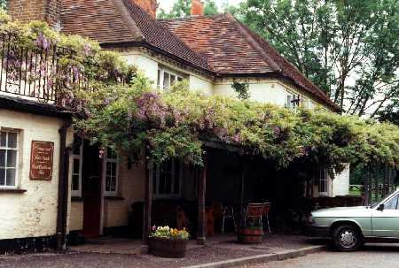
THE AVENGERS: Killer
(Cliff Owen: September 1968)
Steed (Patrick Macnee) and Lady Diana (Jennifer
Croxton) arrive at The
Pirate, Lower Storpington, looking for Remak. Brinstead (William
Franklyn) and Merridan (Grant Taylor)
arrive and Brinstead lures them
away from the pub whilst Merridan deals with one of Mother's agents. On
returning to The Pirate they notice a coach leaving a nearby factory
and Lady Diana follows it whilst Steed investigates the factory.
H29: The Garden Centre,
East Burnham Lane, East Burnham
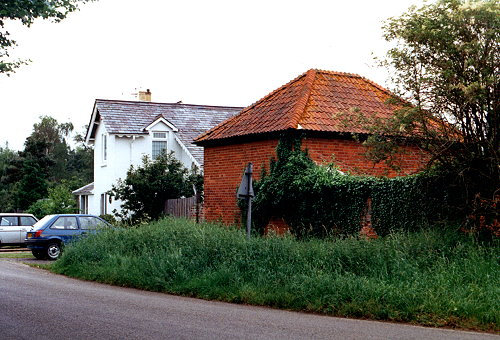
THE SECRET SERVICE: The
Cure (Leo Eaton:
Autumn
1968)
Sakov arrives in England and as he is driven towards Greenways Nursing
Home he is followed by B.I.S.H.O.P. agents.
H30: East Burnham Park,
Allerds Road, East Burnham
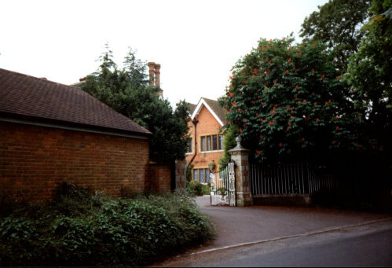
THE SECRET SERVICE: The
Deadly Whisper (Leo
Eaton:
Autumn 1968)
Anne Soams calls her Father from a phone box just outside London, then
gets in her car and drives away.
H31: Fulmer Lane/St.
Huberts Lane/Hawkswood Lane Junction, Fulmer
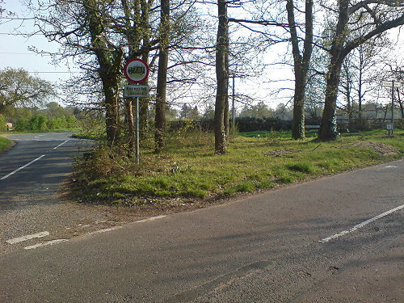
photo: Geoff Dodd
MAN IN A SUITCASE: All
That Glisters (Herbert
Wise: August 1966)
McGill drives his Hillman back and forth along the Marston Gurney road
and turns at the junction.
STRANGE REPORT: Report
5055 Cult: 'Murder Shrieks Out'
(Charles Crichton: September 1968)
Police cars race to the Cyprus Fund cult Headquaters, Cyprus Grove
(along Fulmer Lane then turning onto Hawkswood Lane).
THE SECRET SERVICE: A
Case for the Bishop (Ken
Turner: Autumn 1968)
Father Unwin and Matthew speed round the junction as they attempt to
evade the Dreisenberg Ambassador who is pursuing them.
THE SECRET SERVICE: School
For Spies (Ken
Turner:
Autumn 1968)
Father Unwin stops at the Downham/Pennyridge junction in Gabriel to
give directions to the lost Brother Jess. After he drives away, Father
Unwin (Stanley Unwin) corrects the road sign he
changed earlier.
THE SECRET SERVICE: A
Question Of Miracles (Leo
Eaton: Autumn 1968)
Father Unwin drives to Port Trennick in Gabriel
H32: Quarry Cottages,
Willets Lane, Nr. Rush Green

THE NEW AVENGERS: Cat
Amongst the
Pigeons (John Hough: June 1976)
Steed (Patrick Macnee) is attacked by a bird (on
the M40 Bridge) of
prey hidden in his Range Rover and drives his car into the back of a
furniture van to calm the bird. Steed reverses out of the van and
through a four-poster bed.
THE NEW AVENGERS: Eagles
Nest (Desmond
Davis:
April 1976)
Gambit helped himself to a white Citroen to follow the van from the
conference centre (Southlands Road at the junction with
Hollybush Lane
looking towards New House Farm). Gambit (Gareth
Hunt) follows the van
carrying the kidnapped Von Claus along the lane but is spotted by Ralph
as they reach the bridge (Hollybush Lane). At the
next bend Ralph
(Jerold Wells) jumps out of the van and waits, gun
in hand, for Gambit.
Gambits car is hit and runs off the road, but he is unharmed and a
fight ensues.
(expanded with the help of Geoff Dodd, March 2013)
Television:
THE SWEENEY: Chalk
and Cheese (1975)
H33: St. Huberts, St.
Huberts Lane, Gerrards Cross

THE PERSUADERS!: Chain
Of Events
(Peter Hunt: 1970)
Danny (Tony Curtis) and Brett (Roger
Moore) arrive at the Rogers
Nursing Home.
THE NEW AVENGERS: Cat
Amongst The Pigeons (John
Hough: June 1976)
The Sanctury of Wings run by Professor Zarcardi (Vladek
Sheybal).
THE NEW AVENGERS: Obsession
(Ernest
Day: Spring
1977)
After leaving Steed and East immobile at Lary Doomer's house,
Purdey (Joanna Lumley) races on her
motorbike in an attempt to
reach Larry first (passing the gates of St. Hubert's).
(Identified by Geoff Dodd, March 2021)
THE PROFESSIONALS: Dead
Reckoning (Denis
Lewiston:
1979)
Anna Batak (Carol Royle) is taken to King’s Lodge
to meet the real
Stephan Batak (Alan Tilvern). Michael (Michael
Hadley) and a Bulgarian
officer (Jeffrey Chiswick) are already there to
meet them. Bodie (Lewis
Collins), Doyle (Martin Shaw) and Cowley (Gordon
Jackson) arrive just
in time.
THE PROFESSIONALS: The
Madness of Mickey Hamilton
(William Brayne: 1979)
Hamilton (Ian McDiarmid) goes to visit his daughter
Cathy at the
nursing home near Reading. He is met by the Reverend Mother (Myrtle
Moss).
THE PROFESSIONALS: Blood
Sports (Phil
Meheux: 1980)
A CI5 man (Gerald Martin) watches as Captain
Hidalgo (Michael
Griffiths) leaves his residence in a Rolls Royce. Anita
Cabreros
(Michelle Newell) sees Rene Lacoste (Yves
Beneyton) arrive at the
house. Doyle (Martin Shaw) arrives to investigate.
THE PROFESSIONALS: A
Man Called Quinn (Horace
Ov�:
1981)
At Repton Hospital, Quinn (Del Harvey) is chopping
logs. A nurse
(Malcome Mudie) tells him to go inside for treatment
where a man posing
as one of the Doctors (Steven Berkoff) tries to
inject him. Quin
escapes chased by orderlies. Later Cowley (Gordon Jackson)
goes to
interview a doctor (Christopher Scoular) about
Quinn. Soon after
Bodie (Lewis Collins) and Doyle (Martin
Shaw) arrive.
HAMMER HOUSE OF MYSTERY AND SUSPENSE:
The Sweet Scent of Death
(Peter Sasdy: December 1983)
Greg and Ann Denver arrive at their new home.
INSPECTOR MORSE: The
Remorseful Day (Jack
Gold:
2000)
Yvonne Harrison (Meg Davies) prepares for the
arrival of a visitor to
her home in Lower Swinstead. She is watched by a figure hiding near the
house. Later her husband, Frank, arrives by taxi to find her battered
to death.
Films:
THE MARCH HARE (1956)
JUST MY LUCK (1957)
THE LEAGUE OF GENTLEMEN
(1960)
ISLAND OF TERROR
(1966)
THE WATCHER IN THE WOODS
(1980)
Television:
Q.E.D.: Target London
(1982)
MINDER: Senior
Citizen Caine (1984)
The Pretenders: DON'T GET ME WRONG
(1986)
H34: St. Hubert's Home
Farm, St. Huberts Lane, Gerrards Cross
THE SECRET SERVICE:
To Catch a Spy (Ken
Turner:
Autumn
1968)
After being directed to farm South of Esher on the Portsmouth Road,
Father Unwin (Stanley Unwin) drives his Model T
Ford,
Gabriel, through the gates. He watches the helijet land and then
follows the Jaguar carrying Sir Humphrey and Grey as it leaves.
(Identified by Sietse Postma, May 2022)
THE PERSUADERS: Take
Seven (Sidney
Hayers:
October 1970)
David Conran (Richard Hurndall) arrives at
Harvester's (John Kelland)
farm and is shown to the barn where his Aunt's diaries are kept. Brett
Sinclair (Roger Moore) arrives in Aston Martin in
time to catch Heyward
(Garfield Morgan) before he can destroy the diary.
H35: Hollow Hill
Lane/Mansion Lane, Iver
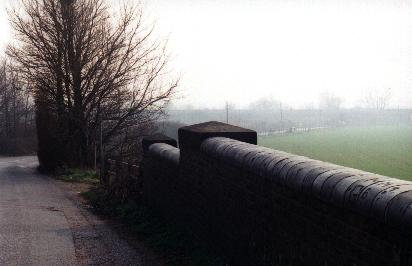
MAN IN A SUITCASE: Property
Of A Gentleman (Peter
Duffell: Summer 1967)
McGill drives to the country house.
THE NEW AVENGERS: Tale
of the Big Why (Robert
Fuest: Auguet 1976)
Brandon goes west along the B97 and is followed by Purdey on her
motorcycle but loses him at a road junction just after a bridge.
H36: Sutton Lane Bridge,
M4 Junction 5, Langley
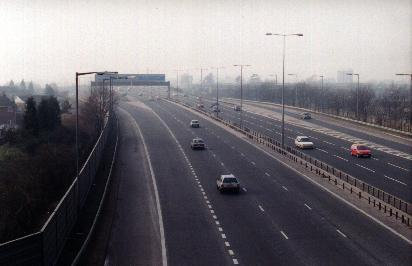
MAN IN A SUITCASE: Property
Of A Gentleman (Peter
Duffell: Summer 1967)
A car leaves the motorway.
THE PERSUADERS!: Take
Seven (Sidney
Hayers:
October 1970)
???Need text here?????
H37: UTS Garage, Slough
Road, Shreding Green
INSPECTOR MORSE: Cherubim
& Seraphim
(Antonia Bird: 1991)
Inspector Morse (John Thaw) visits the garage to
ask about the missing
boy.
H38: Iver Heath,
Buckinghamshire

photo: Sam Denham
MAN IN A SUITCASE: Which
Way Did He Go, McGill?
(Freddie Francis: Summer 1967)
Earle rides his bike around a corner of a quiet residential street
(Pinewood Green) just before he meets up with McGill.
(Spotted by Sam Denham)
STRANGE REPORT: Report
8319 - GRENADE:
'What
Price Change?' (Charles Crichton: Early 1968)
Walker (Anthony Corlan) is tailed by Gynt (Kaz
Garas) to the shops
where they both board a double-decker bus (Church
Road/Thornbridge
Road).
H39: Iver, Buckinghamshire
THE AVENGERS: The
Fear Merchants (Gordon
Flemyng: September 1966)
Crawley's Rolls speeds into a country road (Love Green Lane
from
Bangor's Road).
H40: Iver Lane, Cowley,
Middlesex
THE AVENGERS: The
Fear Merchants (Gordon
Flemyng: September 1966)
Crawley is driven at speed on a heart-stopping journey (Iver
Lane
appears on back projection from Cowley High Street to Moor Lane).
H41: Bells Hill Shopping
Precinct, Stoke Poges, Buckinghamshire (redeveloped)
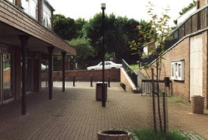
photo: Sam Denham
THE NEW AVENGERS: Sleeper
(Graeme
Clifford:
September 1976)
Pursued by Bart (Prentis Hancock) and Chuck (Mark
Jones), Purdy (Joanna
Lumley) hide among the window display dummies of Marian's
dress shop.
When her pyjamas start slipping she turns on her pursuers with a kick
and a clothes rail through the window. After relieving Chuck of his
belt she runs off up a ramp.
H42: Mount Fidget, Iver
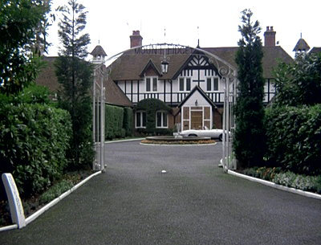
THE PERSUADERS!:To the
Death, Baby (Basil Dearden: June/July 1970)
In the pre-credit sequence Gladys Smith (Jennie Linden)
posing as
Shelley Masterton enters her country home.
(Spotted by Jaz Wiseman, July 2001)
H43: Junction of Fulmer
Common Road and Alderbourne Lane , Iver, Buckinghamshire
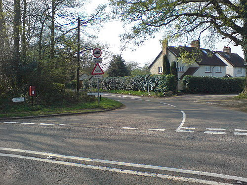
photo: Geoff Dodd
MAN IN A SUITCASE: Which
Way Did He Go McGill?
(Freddie Francis: Summer 1967)
McGill goes to visit his old friend Eddy at his garage in the country.
Just before he gets to the garage he drives along this road. Later
Kevin Earle passes through this junction on his motorbike on his way to
visit a former racing driver.
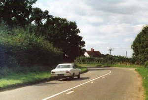
photo: Sam Denham
THE SAINT: The
Queen's Ransom (Roy
Baker:
April 1966)
The yellow Ford van carrying the villains takes a turning for Brunnen.
Not far behind, the limousine carrying the Queen and Simon take the
same turning.
H44: Teikyo School Fulmer
Grange, Framewood Road, Wexham, Buckinghamshire
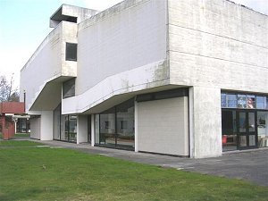
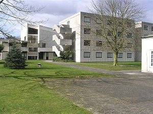
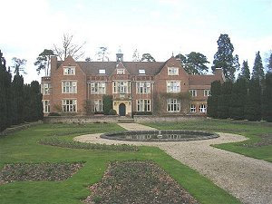
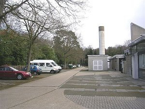
photos courtesy of Jaz Wiseman, were taken by Bill O'Shea with thanks
to Mr and Mrs Uehara - Headmaster of the Teikyo School
STRANGE REPORT: Report
5055 Cult: 'Murder Shrieks Out'
(Charles Crichton: September 1968)
Moran (Ed Bishop) and Edward Pato (George
Mikell) join with the rest of
the community of Cyprus Grove to welcome back their leader Lars (Ray
McAnally), Maggie Jones (Pamela Franklin)
and Jay Brand (Christopher
Mitchell) after their world tour. After the death of Jay,
Adam Strange
(Anthony Quayle) arrives at the gates with Ham Gynt (Caz
Garas) in his
taxi. Strange tells Gynt to keep a low profile before entering to
interview Lars. Their interview is cut short by Newcome (John
Ronane)
who calls Lars to another meeting. Later Evelyn (Anneke
Willis)
accompanies Maggie and Strange to the funeral of Jay Brand in the
grounds of Cyrpus Grove. After the funeral Strange takes the
opportunity to investigate the computer room. After working on the case
with Inspector Morell (Tony Steedman), Strange has
enough evidence to
organise a police raid of Cyprus Grove and the convoy of police arrive.
Confirmed by Graham Taylor
THE PROFESSIONALS: Lawson’s
Last Stand (Ian
Sharp:
1981)
Whilst Tug Willis (John Hallam) launches mortar
rounds into the site,
Lieutenant Colonel Peter Lawson (Michael Culver),
and Len Clarke
(Michael Angelis) enter Marston Dale chemical
weapons research
establishment posing as bomb disposal officers. They use the confusion
in order to steal a canister of C29 nerve gas. As the gang leave in a
Land Rover, Bodie (Lewis Collins) and Ray Doyle (Martin
Shaw) arrive
and interview the Professor (Allan Mitchell).
(Source:
The
Authorised Guide to The Professionals)
H45: Belmont Road, Uxbridge
STRANGE REPORT: Report
4997 – Swindle: "Square root of evil"
(Brian Smedley-Aston: November 1968)
Hamlyn Gynt rides his bike to the labour exchange (Uxbridge
Job Centre)
to talk business with one of his old girlfriends.(Identified
by Sam
Denham, March 2005)
H46: Windsor Street,
Uxbridge (redeveloped)
MAN IN A SUITCASE: Man
from the Dead (Pat
Jackson:
August 1966)
After leaving the nursery school where she works, Rachel Tyson sees a
figure in the distance crossing the street (Windsor Street).
She thinks
she recognises the man as her late father.
H47: Barn Garage, Hawthorn
Lane, Farnham Common, Bucks. (redeveloped)
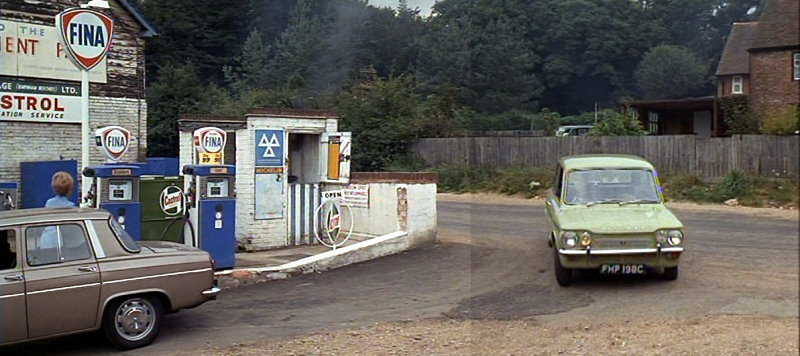
MAN IN A SUITCASE: Which
Way Did He Go, McGill?
(Freddie Francis: Summer 1967)
McGill (Richard Bradford) goes to visit his old
friend Eddy (J. G.
Devlin) at his garage in the country.
(Identified by Nick Haugh, February 2004)
THE SECRET SERVICE: More
Haste, Less Speed (Ken
Turner: Autumn 1968)
Lady Martha steals a motorbike from a car park (Burnham
Beeches
Swimming Pool/The Dell).
Film:
THEY CAME FROM BEYOND SPACE
(1967)
H48: A332 Eton Road Bridge
over Eton Wick Road
THE NEW AVENGERS: Medium
Rare (Ray
Austin: )
Graham Henry Wallace (Jon Finch) uses a van parked
on a road bridge as
a make-up wagon. After receiving a second payment for acting as a
‘special operative’ he is followed to the van by paymaster Freddy Mason
(Allen Weston). Mason confronts Wallace and the two
fight. Mason is
knocked over a parapet and falls to his death. John Steed (Patrick
Macnee) is soon on the scene and with the help of Purdey (Joanna
Lumley) and Wallace, begins his investigation.
(Identified by Alan Field, June 2007)
H49: Ragstone Road, Slough
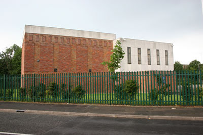
photo: Alan Field
THE NEW AVENGERS: Target
(Ray Austin:
July 1976)
For some reason the Pathology Department of Steed's organisation is
based in the middle of this housing development. Klokoe (Deep
Roy)
dressed as a small child is lurking outside when the facility when John
Steed (Patrick Macnee) and Mike Gambit (Gareth
Hunt) race off in
Steed’s Range Rover in an attempt to save Purdey.
(Identified by Alan Field, June 2007)
THE NEW AVENGERS: Faces
(Ray Austin:
July 1976)
After being assigned the task of killing the real Purdey, the real
Purdey (Joanne Lumley) races to telephone Steed.
She makes her way to
the telephone box on this street
(Identified by Alan Field, June 2007)
H50: Hatfield Car Park,
Hatfield Road, Slough
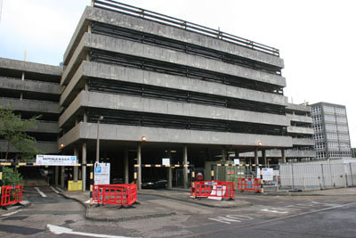
photo: Alan Field
STRANGE REPORT: Report
0649 SKELETON:
'Let Sleeping Heroes Lie' (Peter Medak:
August/September
1968)
Gynt (Kaz Garas) and James (Hugh Burden)
wait inside follow the car to
a multi-storey car park, where Adam has been transferred back into his
taxi.
(Identified by Alan Field, July 2007)
H51: Broom House,
Reddington Drive, Colnbrook
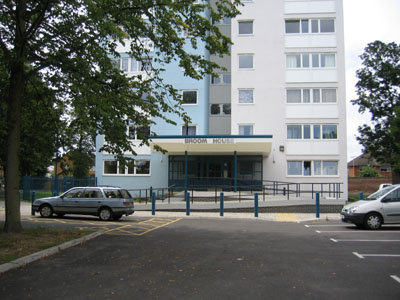
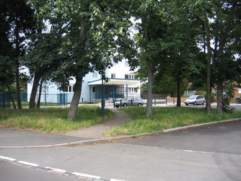
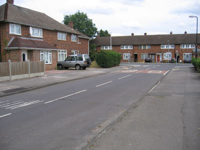
photos: Alan Field
STRANGE REPORT: Report
1553: Racist: 'A most dangerous
proposal' (Peter Duffell: August 1968)
Adam Strange and Hamlyn Gynt follow Drake (Karl Held)
in Adam’s taxi as
he drives from his flat They follow (along Reddigton Drive)
him to the
flat (Colnbrook) of Tom Brant (Clive
Francis) and watch as Drake hands
over money and the keys to his car. Brant drives off in Drake’s car and
Strange follows.
(Identified by Alan Field, August 2007)
STRANGE REPORT: Report
8944-HAND:
'A matter of witchcraft' (Peter Duffell: 1968)
Adam and Inspector Graves go to the flat shared by the murdered girl,
Anne and Joanna Hewett.
H52: Wallingford Road,
Uxbridge
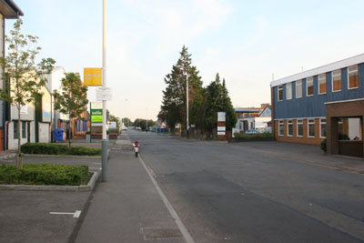
photo: Alan Field
MAN IN A SUITCASE: Brainwash
(Charles
Crichton:
October 1966)
McGill (Richard Bradford) escapes from his prison
to find himself in an
industrial wasteland. Judy (Suzan Farmer) who is
waiting outside rushes
to help McGill.
(Identified by Alan Field, August 2007)
Film:
THE WRONG ARM OF THE LAW
(1962)
H53: Bridge Road, Uxbridge
STRANGE REPORT: Report
8319 - GRENADE:
'What Price Change?' (Charles Crichton: Early
1968)
Adam Strange (Anthony Quayle) picks up Evelyn (Anneke
Wills) in his
taxi as she leaves the offices of Social Action Ltd..
(Identified by Alan Field, August 2007).
H54: Wood Lane, Iver Heath
THE NEW AVENGERS: The
Midas Touch (Robert
Fuest:
Spring 1976)
Steed (Patrick Macnee), Purdey (Joanne
Lumley), and Gambit (Gareth
Hunt) have to race, in Gambit’s red Jaguar, from the gas
works to the
exhibition in order to save the princess (first seen
traveling South,
then North towards the Crooked Billet Roundabout).
H55: Marriott Hotel;
Ditton Road, Langley
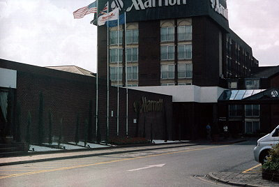
photo: Sam Denham
THE NEW AVENGERS: The
Midas Touch (Robert
Fuest:
Spring 1976)
Following a clue for Purdey, Steed (Patrick Macnee)
and Gambit (Gareth
Hunt) Steed and Gambit arrive at the Exhibition of Gold
Antiquities.
They find Purdey’s car, but cannot find her. Later Gambit crashes his
Jaguar into the doors of the exhibition centre when the team try to
save the Princess from her assassin.
Film:
I DON’T WANT TO BE BORN
(1975)
H56: House, Fulmer Rise,
Iver
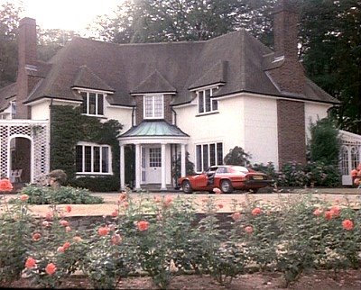
THE NEW AVENGERS: Cat
Amongst the Pigeons (John
Hough: June 1976)
Steed (Patrick Macnee) and Gambit (Gareth
Hunt) go to visit Zarcadi's
next victim, Professor Waterlow. Waterlow (Peter Copley)
is by his
swimming pool typing, but unbeknownst to them all Zarcadi (Vladek
Sheybal) is already there and watching the house. Zarcadi
uses his bird
call to summon birds to attack the professor and Steed.
H57: Greyleigh, Saint
Hubert's Lane Fulmer Rise, Iver
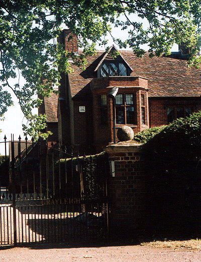
photo: Sam Denham
THE NEW AVENGERS: Obsession
(Ernest
Day: Spring
1977)
Purdey (Joanna Lumley) arrives at Larry Doomer’s
house on her
motorbike. She asks Doomer (Martin Shaw) if he saw
General Canvey (Mark
Kingston) after leaving Steeds party. Later Purdey arrives
first when
she discover’s a motive for Doomer’s actions. Steeds party. Steed
(Patrick Macnee) and Commander East (Terence
Longdon) are not far
behind, arriving in Steed’s Range Rover.
H58: Saint Hubert's Lane,
Fulmer
THE NEW AVENGERS: Obsession
(Ernest
Day: Spring
1977)
After leaving Steed’s party Larry Doomer (Martin Shaw)
pretends to
break down. He flags down General Canvey (Mark Kingston)
and kidnaps
the general at gunpoint and drives off with him. Commander East
(Terence Longdon) finds the General’s abandoned car
and takes Steed
(Patrick Macnee), Purdey (Joanna Lumley)
and Gambit (Gareth Hunt) to
the spot. Purdey drives off to see Larry on her motorbike.
H59: The Old Place,
Boveney Road, Boveney, near Dorney
(Identified by Bob Rocca, August 2007)
THE NEW AVENGERS: Last
of the Cybernauts...??
(Sidney Hayers: May 1976)
Malov (Oscar Quitak) waits while the Cybernaut (Rocky
Taylor) kidnaps
Professor Mason. The security guard (Ray Armstrong)
is unable to stop
the cyborg.
THE NEW AVENGERS: Faces
(Ray Austin:
July 1976)
Steed (Patrick Macnee) pays a visit to the widow of
Sir Nigel (Annabel
Leventon) to discuss the death of he husband.
THE PROFESSIONALS: Blackout
(William
Brayne: 1980)
Bodie (Lewis Collins), Ray Doyle (Martin
Shaw) and Gerda (Linda Hayden)
arrive at Henry Ch’chew’s house. Later Cowley (Gordon Jackson)
arrives
with the police.
INSPECTOR MORSE: The
Silent World of Nicholas Quinn
(Brian Parker: 1986)
Morse (John Thaw) is called in by Lewis (Kevin
Whately) to the home of
Nicholas Quinn (Phil Nice) and arrives inn his
Jaguar. Max (Peter
Woodthorpe) is already there examining the body. Donald
Martin Roger
(Lloyd-Pack) watches from a police car before being
questioned by Morse.
Television:
THE SWEENEY: I Want
the Man (1975)
MIDSOMMER MURDERS: Dead
Man's 11 (1999)
H60: Uxbridge, Vine Street
Station (demolished and now under Hillingdon Road)
GIDEON’S WAY: How to
Retire Without Really Working
(George Pollock: November/December 1964)
Margaret Gresham (Joyce Grant) hides any
incriminating evidence and a
proportion of their loot at a disused railway station. Later Robert
Gresham (Eric Barker) joins his wife to collect
their belongings.
(Identified by Alan Field, June 2007)
H61: Pinewood Close,
Pinewood Green, Iver Heath
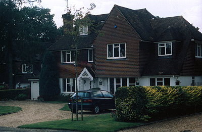
photo: Sam Denham
STRANGE REPORT: Report
1021 Shrapnel: ’The Wish in the Dream’
(Brian Smedley-Aston, February, 1969)
Adam Strange (Anthony Quayle) visits the home of
Mrs Carol Webber
(Sylvia Syms) after the inquest into her husband’s
death. Later all
hell breaks out on he quite cul-de-sac when her husband, Paul Webber
(Gerald Flood) is dragged out of the house by Hamlyn
Gynt (KazGaras)
and Inspector Purcell (Bryan Marshall). George
Halliday (Leo Glenn) can
only stand and watch.
(Identified by Sam Denham, October 2007)
H62: Saint Laurence
Church, Church Road, Cowley, Uxbridge
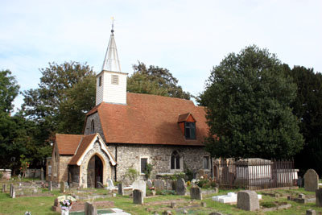
photo: Alan Field
GIDEON'S WAY: The
Housekeeper (Leslie
Norman:
1965)
Supervised by Keen, the police exhume the body of ‘old’ Charlie.
(Identified by Alan Field, October 2007)
H63: The Fairway, Burnham
photos: Geoff Dodd
MAN IN A SUITCASE: Which
Way Did He Go, McGill?
(Freddie Francis: Summer 1967)
Keith Earle (Donald Sutherland) arrives at the home
of former racing
driver Jerry Norman (Hedger Wallace) and his wife (Veronica
Hurts) (38
The Fairway, Burnham).McGill is directed to this "luxury
apartment
block" (Flats 1-6, Pipers Court) to find George
Hastings during his
investigations. Earle is not far behind.
(Identified by Geoff Dodd, May 2008)
H64: Southlands Road, New
Denham (redeveloped)
THE NEW AVENGERS: The
Tale of the Big Why (Robert
Feust: August 1976)
Gambit (Gareth Hunt) loses Brandon and ends up with
his Range Rover on
a dead-end road four miles from ‘Point B’. He radios his position to
Steed.
(Identified by Alan Field, June 2008)
H65: Clifton Road, Slough
THE NEW AVENGERS: Hostage
Steed (Patrick Macnee) is watched as
he delivers ransom
money to "14 Edge Street".
(Identified by Alan Field, August 2008)
H66: Slough Gas Works,
Uxbridge Road - Slough
STRANGE REPORT: Report
No.2475 - REVENGE:
'When a Man Hates' (Charles Crichton: November
1968)
Adam Strange (Anthony Quayle) and Inspector Jenner (John
Thaw) pay a
visit to the former lodging of Mary Hanson (Victoria Road
house
demolished, gas works across the road). They talk to the
landlady, Mrs
Rogers (Gabrielle Hamilton) about the Hanson family.
(Identified by Alan Field, July 2008)
THE PROTECTORS: Blockbuster
(Jeremy
Summers:
1973)
A security van carrying platinum is attacked and robbed inside the
Saunders Chemical Works
(Identified by Alan Field, July 2008)
H67: Furze Hotel, A412
Uxbridge Road, Slough
THE SAINT: The Noble
Sportsman (Peter
Yates: 1963)
Lord Yearley drives along a duel carriageway (A412 by the
Furze Hotel)
to his house in the country from London.
(Identified by Nick Atkinson, September 2008)
H68: M4, Junction 5 Slough
DEPARTMENT S: A
Ticket to Nowhere (Cyril
Frankel: Early 1969)
Jason drives Miss Blain home in his red Bentley (The M4
westbound at J5
with the camera vehicle running parallel on Farm Road).
(Spotted by Alan Field, October 2008)
H69: Lawn Road,
Hillingdon, Uxbridge
MAN IN A SUITCASE: Which
Way Did He Go, McGill? (Freddie Francis: Summer 1967)
Keith Earle (Donald Sutherland) sets off to find
his
former colleagues from this street. McGill goes to interview Roger
Fulton (Tom Criddle) at his home. Detective
Inspector Stoke (Michael
Hawkins) is following the same leads and arrives with his
men. Fulton
gives McGill the slip and drives off.
(Spotted by Alan Field, October 2009)
H70: Junction of Black
Park Road and Uxbridge Road, Slough
MAN IN A SUITCASE: Web
with Four Spiders (Robert
Tronson: January 1967)
With Croft's chauffeur, Frederick, in the back of the limousine, McGill
leaves drives to London followed by intelligence agents (cars
shown
approaching junction from both sides of Uxbridge Road).
(Identified by Ray Croft, September 2011)
H71: Alderbourne Manor,
Fulmer Lane, Fulmer, Buckinghamshire
THE PERSUADERS!: To
the Death, Baby (Basil
Dearden: June/July 1970)
After Coady (Harold Innocent) and his men arrive at
Carl Foster's
(Terence Morgan) villa Foster makes a run for it
past Coady's men and
escapes in an MG. All this is witnessed by John Hatton.
(Identified by Steve Cook, January 2012)
H72: Junction of East
Burnham Lane and Stoney Lane, East Burnham
THE AVENGERS: The
Rotters (Robert
Fuest:
September 1968)
Tara pursues Sawbone's MGB in her Lotus Europa along a flooded road and
into a small hamlet
H73: Hollybush Lane, Denham
THE NEW AVENGERS: Eagles
Nest (Desmond
Davis:
April 1976)
Gambit helped himself to the white Citroen to follow the van from the
conference centre (Gambit's point of view).
(Identified by Alan Field, March 2013)
H74: South Bucks District
Council offices, Windsor Road, Slough (demolished)
THE NEW AVENGERS: Angels
of Death (Ernest
Day:
April 1977)
The Ministry Building where Steed (Patrick Macnee)
confronts Peter
Manderson (Terence Alexander) about his little
secret and tells him to
drive.
(Identified by Mark Pond, December 2012)
H75: Red Cow Roundabout,
Slough
THE NEW AVENGERS: Angels
of Death (Ernest
Day:
April 1977)
After leaving the Ministry Building Steed (Patrick Macnee)
confronts
Peter Manderson (Terence Alexander) about his
little secret in the car
(they do a circuit of Red Cow Roundabout, Castle Street and
Mere Road).
H76: Ridgeway Trading
Estate, The Ridgeway, Thorney Lane, Iver

THE AVENGERS: The
Fear Merchants (Gordon
Flemyng: September 1966)
Steed goes to interview Crawley at his ceramics factory (the
factory
has been demolished, but stood behind what is now the headquarters of
Fagioli Ltd.). Steed (Patrick Macnee)
escorts Crawley (Andrew Keir) to
his Rolls Royce and watches him drive off. He then notices Crawley’s
chaffer on the ground unconscious. Steed jumps into his Bentley and
gives chase.
(Identified by Mike Serby, May 2015)
H77: Horlicks factory,
Stoke Poges Lane, Slough
THE HUMAN JUNGLE: The
Lost Hours (Sidney
A.
Hayers: 1963)
(Identified by Aaron Gray, July 2017)
H78: Black Firs, Fulmer
Common Road, Fulmer
THE NEW AVENGERS: Angles
of Death (Ernest Day: Summer 1977)
Charles Pelbright (Richard Gale), checks out of
Briantern Health Farm
and is met by his wife (Jennie Goossens) while
nurses, Tammy (Caroline
Munro) and Cindy (Moira Foot). Later
another client, Colonel
Tomson leaves (Hedger Wallace) and
Manderson (Terence
Alexander) arrives later. John Steed (Patrick
Macnee), posing as Simon
Carter, is the Briantern’s last official guest. Although Purdy (Joanna
Lumley) sneaks in through a window. This all proves too much
of for
Coldstream (Dinsdale Landen) and Reresby (Michael
Latimer).
(Identified by Steve Cook, February 2021)
Television:
THE PROFESSIONALS: Long
Shot (1978)
MINDER: Guess Who’s
Coming to Pinner
(1991)
H79: Hollydene House,
Fulmer Common Road, Fulmer
THE NEW AVENGERS: Angles
of Death (Ernest Day: Summer 1977)
Gambit and Steed go to interview Manderson at his house, but
his wife Sally (Melissa Stribling) tells
them that her husband
is away on official business.
(Identified by Geoff Dodd, March 2021)
H80: East Burnham House,
Thompkins Lane, Burnham (destroyed by fire in 1977)

MAN IN A SUITCASE: Night
Flight to Andorra
(Freddie Francis: December 1967)
The villa that McGill and his band of mercenaries are trying to rob.
(Identified by Geoff Dodd, July 2021)
FROM A BIRDS EYE VIEW: The Sicilian Affair (John
Robbins: Summer 1969)
The Sicilian villa.
(Identified by Geoff Dodd, July 2021)
THE ZOO GANG: The
Counterfeit Trap (John
Hough: early 1973)
Manouche (Lilli Palmer) and Tommy (John
Mills) visit Charles Gautier
(Peter Cushing) and Brigitte (Jacqueline
Pearce) at their new house.
(Identified by Geoff Dodd, July 2021)
H81: Denham Lodge, Oxford
Road, Denham
DEPARTMENT S: The
Man From X (Gil
Taylor: Early 1969)
Jason follows Leela Rankin to her London apartment.
(Identified by Rob Burnham, June 2023)
H82: A412 nr. Billet Lane
junction

DEPARTMENT S: The
Man in the Elegant Room (Cyril
Frankel: Spring 1968)
Paul Trenton’s Rolls Royce is seen heading to the abandoned
farm..
(Spotted by Michael Richardson, confirmed bt Geoff Dodd, June
2023)
H83: Cherry Tree Lane, Alderbourne Lane,
Hawkswood Lane, junction, Fulmer, Buckinghamshire

MAN IN A SUITCASE: The Revolutionaries (Peter Duffell: Late 1967)
McGill and Chantal are ambushed by Heidar’s men.
(Spotted by Geoff Dodd, August
2026)
To I